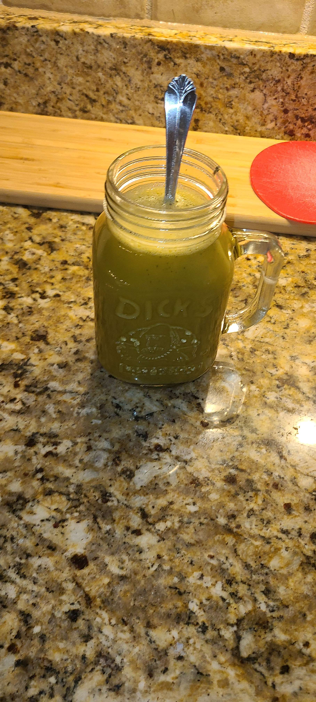
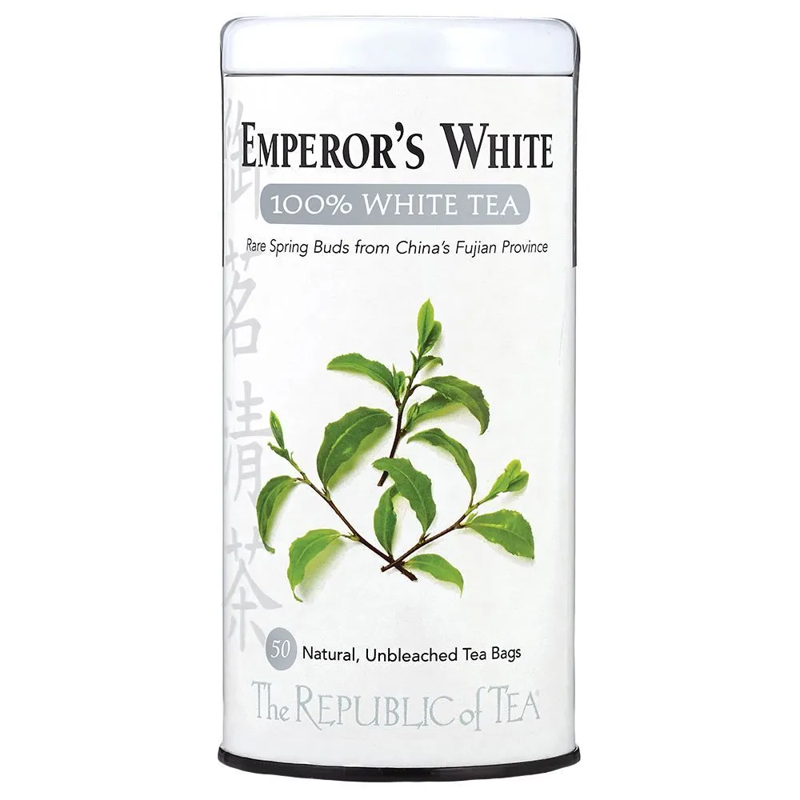

Homemade Thai green tea.

This one was pretty easy to make. I steeped some thai tea in hot water for a bit.
Then, I took out the tea bag, and added matcha powder -with more hot water.
Afterwards, I mixed in some erythyol sugar alternative.
If it wasn't sweet enough for me, I then added a bunch of stevia liquid drop sweetner.
Finally, we fill up the rest of the cup with oat milk. We mix at every step btw. There should be a lot of bubbles from the hot water and the stirring.
I love drinking this, it tastes delicious. The steeped Thai tea has a very strong flavor, and the matcha is very bitter.
It's very refreshing, and my go-to morning drink. The only downside is that it's VERY hard to transport and move around. The mason jar in this picture doesn't fit in my car (lol).
It's definetly more of a "wake up at 6 and get out the door at 8" type drink.
I came up with this idea after going to a boba place where they had this combination. They added a TON of sugar. It tasted really good, and I think the flavor profile of matcha bitterness, thai tea strength and milky sweetness make this fantastic.
Rating: 3/3 stars. Good in almost every scenario. Setup isn't difficult at all.
Sleepytime tea.
I get a bunch of these teas and drink them at least once a week before bed.
It's alright. I don't think it's actually effective.
I drink it anyway though - because what IF there's that once percent chance where it actually does something.
I drink it all the time when I have to wake up early.
It's a good placebo - like when I drink it im like "ok i have to go to bed on time, I have to do my night routine early".
Its cheap though and tastes good -so even if its bad, it doesnt matter.
Rating: 2/3 stars. I drink this alot.
Chocolate milk (Not a tea, but I don't care).
Rating: 100/3 stars. I'd exchange my blood for chocolate milk if I could.
Emporers White tea.

Wow, this is REALLY good. Like holy crap.
Distinct, subtle flavor, sweet aroma, and good vibes. I love it.
It's slightly caffeinated, so it's a good addition when I'm home and want something light.
Probably one of the most refreshing teas I've got. I love it.
Rating: 3/3 stars. I always go for it in my tea rotation.
English black tea bags (Twinnings, Tetley, all brands pretty much).
I only had these when I was sick as a kid, with lots of honey.
I don't like black teas as much because they require a lot of setup to make taste good.
You have to steep it the correct amount of time to prevent it from being bitter, you have to add sweetners and stir them, you've got to do a lot.
It's heavily caffinated, so I can't eat it whenever I want.
It's also super heavy too.
Rating: 1.5/3 stars. Conditionally good, but not worth it imo.
Green tea.
I had WAY too many of these as a kid. Every day, after school, I'd be SO tired. I'd always get this at 5pm almost every day, without fail.
Back then I used teabags, but now I just use regular matcha.
I don't notice that much of a difference, as green tea is green tea IMO. I prefer the powder because it's easier to add milk to it.
Also, when I use teabags, I notice that theres just random leaf stuff at the bottom. I have no clue what it is.
Classic tea flavor, one of my favorites. One of the few teas I can drink boiling hot and be alright with.
Rating: 3/3 stars. On the rotation.
Chamomile tea.
Oh man, where to begin.
I've only drank this from teabags, so keep that in mind.
I don't like this at all, and I dont have specific reasons why, its just a bunch of small stuff.
It FEELS heavy, even though its not.
I remember it not tasting good, but it's flavor is forgettable.
Adding in other things doesn't change the flavor much, which is suprising.
Overall, one of my conditional teas. It can be really good if im feeling it.
I've noticed a pretty large gender divide in Chamomile tea. Almost every woman I know really likes it.
I find that interesting, because as a guy I really don't feel for it at all.
Rating: 1.5/3 stars. On the rotation, but only if theres no better tea.